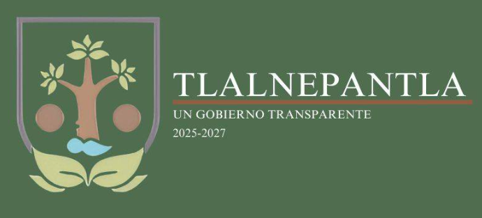

Atracciones de Tlalnepantla

Centro Histórico de Tlalnepantla
El centro histórico es el núcleo de la vida social y cultural del municipio. Sus calles empedradas, plazas y edificios antiguos muestran la historia y tradición de la comunidad. Aquí se concentran comercios locales, mercados y restaurantes que ofrecen desde productos artesanales hasta gastronomía típica. Es también el escenario de las principales festividades como la feria de Pentecostés y el Día de Muertos, donde se instalan puestos, se realizan danzas y se llevan a cabo actividades artísticas. El centro histórico es un espacio vivo que refleja la identidad del pueblo y que atrae tanto a visitantes como a habitantes por su ambiente festivo y comunitario.Parroquia de San Bartolo
La parroquia dedicada a San Bartolomé Apóstol es uno de los símbolos más importantes de Tlalnepantla. Su arquitectura colonial y su papel como centro de las peregrinaciones durante la feria de Pentecostés la convierten en un lugar de gran relevancia espiritual. Cada año recibe a miles de peregrinos que llegan con ofrendas, estandartes y promesas religiosas, reforzando la tradición y la fe de la comunidad. Además, su atrio y alrededores son espacios donde se organizan actividades culturales, conciertos y convivencias, lo que la convierte en un punto de encuentro que trasciende lo religioso y se integra en la vida social del municipio.Feria de Pentecostés
La feria de Pentecostés es la celebración más importante del municipio y una de sus mayores atracciones. Se celebra en mayo y reúne a visitantes de diferentes estados como Puebla, Tlaxcala, Estado de México y Ciudad de México. Durante esta festividad se realizan peregrinaciones, danzas tradicionales, conciertos de bandas populares y actividades comerciales. Las familias del pueblo reciben a los peregrinos en sus casas, lo que refuerza la hospitalidad y el sentido comunitario. La feria es un evento que mezcla lo religioso con lo cultural y lo festivo, convirtiéndose en un atractivo turístico y espiritual de gran importancia que marca la identidad del municipio.Día de Muertos en Tlalnepantla
El Día de Muertos es una de las celebraciones más significativas y se ha convertido en una atracción cultural que atrae a visitantes de la región. Las calles y plazas se llenan de color con ofrendas, desfiles, concursos y actividades artísticas. Los panteones se convierten en espacios de encuentro donde las familias honran a sus difuntos con flores, velas y alimentos tradicionales. Se organizan verbenas populares, caminatas al Mictlán, concursos de disfraces y talleres comunitarios, lo que convierte esta celebración en un evento que mezcla tradición ancestral con actividades modernas y festivas.Plazas y mercados locales
Los mercados y plazas de Tlalnepantla son espacios donde se puede conocer la vida cotidiana del municipio. Aquí se venden productos agrícolas, artesanías y comida típica, convirtiéndose en una atracción para quienes buscan experiencias auténticas. Los mercados son también lugares de convivencia social, donde se refuerza la identidad comunitaria y se transmiten tradiciones de generación en generación.Gastronomía local
La gastronomía es una atracción en sí misma porque refleja la mezcla de tradición y modernidad. Los tacos, garnachas, pollos a la leña y bebidas artesanales forman parte de la identidad del municipio. Los restaurantes y cafés modernos complementan esta oferta, atrayendo tanto a locales como a visitantes. La comida se convierte en un elemento que acompaña las festividades y que fortalece la convivencia social.